The solution of Tutorial 1.2, read with ParaView: the developing velocity profile, pressure, turbulent viscosity, isobars, vectors and streamlines, y⁺ and the mean wall shear with Integrate Variables, and the boundary-layer profile in wall units against the law of the wall.
OpenFOAM · Flujo incompresible · Tutorial 1.3
El posprocesamiento de la tubería turbulenta con ParaView
La solución del tutorial 1.2 leída con ParaView: el perfil de velocidad que se desarrolla, la presión, la viscosidad turbulenta, las isobaras, los vectores y las líneas de corriente, y⁺ y el esfuerzo medio en la pared con Integrate Variables, y el perfil de la capa límite en variables de pared contra la ley de la pared.
OpenFOAM · Inkompressible Strömung · Tutorial 1.3
Die Nachbearbeitung des turbulenten Rohrs in ParaView
Die Lösung aus Tutorial 1.2, in ParaView gelesen: das sich entwickelnde Geschwindigkeitsprofil, Druck, turbulente Viskosität, Isobaren, Vektoren und Stromlinien, y⁺ und die mittlere Wandschubspannung mit Integrate Variables sowie das Grenzschichtprofil in Wandeinheiten gegen das Wandgesetz.
Estimated reading: 50 minLectura estimada: 50 minLesedauer: ca. 50 minLevel: undergraduateNivel: licenciaturaNiveau: BachelorVerified on ParaView 5.11.2 (blueCFD-Core 2024) with the Tutorial 1.2 resultsVerificado en ParaView 5.11.2 (blueCFD-Core 2024) con los resultados del tutorial 1.2Geprüft mit ParaView 5.11.2 (blueCFD-Core 2024) und den Ergebnissen aus Tutorial 1.2
Full English translation in preparation. Each section below carries a summary of its content; the complete text, figures and tables are available in the Spanish version, which the ES button above selects.
Open the Tutorial 1.2 solution in ParaView and read it filter by filter: a longitudinal slice, the developing velocity profile, pressure, turbulent viscosity, isobars, vectors and streamlines, y⁺ and the mean wall shear with Integrate Variables, the axis and radial profiles with Plot Over Line, and the profile in wall units on a log axis.
The problem
What is post-processed
The solution is the pipe of Tutorial 1.2 (Re = 50 000, k-ω SST, 149 940 cells, 36.6 diameters long, converged in 307 iterations). Nothing is recomputed.
The theory
What each picture says
Pipe flow development, wall units y⁺ = y uτ/ν and u⁺ = u/uτ, the law of the wall, the mean wall shear and the friction factor f = 8 τw/(ρU²), the turbulent-viscosity ratio νt/ν and streamlines in a pipe.
Step by step
From the slice to the law of the wall
paraFoam; Slice; the camera written by hand; colour ranges; Calculator for νt/ν; Contour (isobars); Clip and Glyph; Stream Tracer; a cross-section slice; a second reader with only the wall; Integrate Variables; Save Screenshot; Plot Over Line on the axis and across the radius with two Calculators; log axis; Save State.
The pipeline
The filters, one by one
The pipeline: reader → Slice1 (with a Calculator, a Contour, a Clip and a Glyph, each removed once its picture is made), StreamTracer1, Slice2 and PlotOverLine1 with two Calculators; and a second reader on the patch walls with Integrate Variables.
Results
What the pictures show
The profile develops over about 17 diameters on the axis; the pressure falls almost linearly; νt reaches 147 ν; y⁺ stays between 0.95 and 1.77; the mean wall shear gives f = 0.0200.
Worked example
Three checks on the pictures
Three checks: the mean f from Integrate Variables against the pressure-drop f of Tutorial 1.2 (the entrance explains the difference); the profile at x = 31 D against the law of the wall; and y⁺ against the requested value.
Common errors
What goes wrong in ParaView
The pipe is a thin strip (36:1); the pipeline shows only nine rows; a filter shows nothing (hidden or not applied); Integrate Variables without the division by the area; the profile line starts at the axis, not at the wall; the log axis with y⁺ = 0.
Suggested exercise
The laminar pipe, read the same way
Open the laminar case of Tutorial 1.1 and repeat the slice, the axis profile and Integrate Variables; compare f with 64/Re and the centre velocity with 2U.
Sources
References
ParaView Guide; Pope (2000); Schlichting and Gersten; Petukhov (1970); Tutorials 1.1 and 1.2 of this series.
Objetivos de aprendizaje
Qué se debe poder hacer al terminar
El tutorial 1.2 terminó con un número: el factor de fricción de la tubería turbulenta. Pero el caso guardó mucho más: el campo de velocidad, el de presión, la viscosidad turbulenta, el esfuerzo en la pared. Este tutorial los lee con ParaView, como se hace en un informe: un corte por el eje del tubo, el perfil de velocidad que se desarrolla desde la entrada, la presión que baja a lo largo del tubo, la viscosidad turbulenta, las isobaras, los vectores y las líneas de corriente, un corte transversal, el \(y^+\) y el esfuerzo medio en la pared, y por último el perfil de la capa límite en variables de pared contra la ley de la pared. No se calcula nada nuevo.
Es el mismo recorrido del tutorial 2.3 (el posprocesamiento del perfil alar), pero con un flujo interno, que cambia lo que hay que mirar: aquí el flujo es casi paralelo a la pared, el tubo es 36 veces más largo que ancho, y lo que importa es la capa límite y la fricción.
Abrir el caso en ParaView y mirar un tubo 36 veces más largo que ancho: la cámara escrita a mano y los rangos de color que dejan ver el desarrollo del perfil.
Leer la presión, la viscosidad turbulenta y las isobaras sobre un corte por el eje, y los vectores y las líneas de corriente en las primeras diámetros.
Sacar números de la pared: \(y^+\) sobre la superficie, y el esfuerzo cortante medio con Integrate Variables, de donde sale el factor de fricción.
Graficar la velocidad sobre el eje y el perfil radial, y pasar éste a variables de pared (\(y^+\), \(u^+\)) para compararlo con la ley de la pared en un eje logarítmico.
Qué hace falta. blueCFD-Core 2024 con su ParaView 5.11.2 y el caso del tutorial 1.2 ya calculado: la carpeta tuberia-turbulenta de la carpeta de corridas, con el tiempo 307 escrito (unos 5 minutos de cálculo con la receta de ese tutorial; el caso se descarga en tuberia-turbulenta.zip). La guía no usa ningún guion: todo se hace con el ratón y con el panel de propiedades, como en el vídeo.
El problema
Qué se va a posprocesar
La solución es la del tutorial 1.2: Re = 50 000, modelo k-ω SST, \(y^+\) ≈ 1 y una malla de 149 940 celdas (tabla 1). El tubo mide 36.6 diámetros de largo y entra con perfil uniforme, de modo que el perfil se desarrolla dentro del dominio, y esa es la primera cosa que hay que ver. Con un tubo de esta longitud, lo primero que enseña ParaView es una tira delgada (figura 1): hay que acercarse por tramos.
Dato
Valor
Caso
tuberia-turbulenta, el del tutorial 1.2 ya calculado (carpeta 307 escrita por foamRun)
tubo recto de 36.6 D de largo, con el eje en x; entrada con perfil uniforme
Malla
149 940 celdas en O de 9 bloques
Campos
p (cinemática), U, k, omega, nut, yPlus y wallShearStress
Tiempo
308 en el selector de ParaView (el último que escribió el solver, la iteración 307)
Programa
ParaView 5.11.2, el de blueCFD-Core 2024; se abre con paraFoam
Tabla 1.El caso que se posprocesa. Es el caso del tutorial 1.2, sin cambios; los datos son los que aparecen en las imágenes de esta guía.
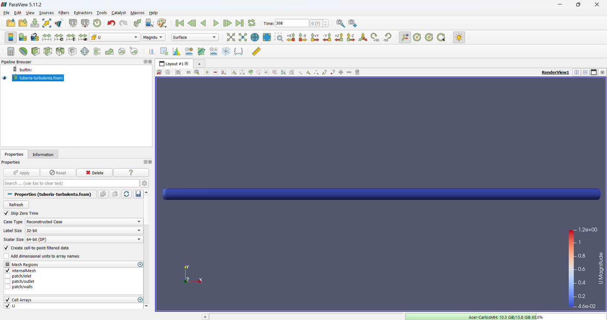
Figura 1.El tubo, completo. Con Adjust Camera, el tubo ocupa todo el ancho de la vista y mide unos 40 píxeles de alto. La superficie azul es la pared, donde la velocidad es cero.
El orden de la receta es el de las preguntas de quien posprocesa. Primero, ¿cómo se ve el flujo? (el corte por el eje y la entrada). Luego, ¿qué hay en cada campo? (presión, viscosidad turbulenta y energía cinética turbulenta, y las isobaras). Después, ¿qué dirección lleva? (vectores, líneas de corriente y el corte transversal). Y al final, ¿qué números hay dentro? (la pared y las gráficas). La tabla 2 es el índice de la receta, y la 3, los rangos de color que se eligen.
Filtro
Entrada
Qué hace
Lo que se cambia
Slice1
el lector
corte longitudinal, por el eje
Z Normal; sin Show Plane
Calculator1
Slice1
νt/ν
nombre nutnu; función nut/0.00002
Contour1
Slice1
isobaras
p, 20 valores entre 0.02 y 0.4 (Add Range)
Clip1, Glyph1
Slice1
vectores de velocidad en las primeras 6 D
caja de 6 × 1 × 0.4; sin matriz de escala, factor 0.2, 300 puntos con muestreo de superficie
StreamTracer1
el lector
líneas de corriente desde la entrada
línea de (0.05, −0.45, 0) a (0.05, 0.45, 0), 10 semillas
Slice2
el lector
corte transversal en x = 31 D
X Normal; origen x = 31
segundo lector, IntegrateVariables1
el archivo .foam
y⁺ en la pared; área y esfuerzo medio
sólo patch/walls; Divide Cell Data By Volume
PlotOverLine1
el lector
perfil sobre el eje y perfil radial
primero de (0.05, 0, 0) a (36.6, 0, 0); luego de (31, 0, 0) a (31, 0.4999, 0)
Calculator1, Calculator2
PlotOverLine1
variables de pared
yplus y uplus
Tabla 2.Los filtros del tutorial, en el orden de la receta. Los valores son los que se escriben en el panel Properties de ParaView. Cada filtro, salvo los últimos, se borra al terminar su imagen (Delete): el Pipeline Browser sólo enseña nueve renglones.
Campo
Rango por omisión
Rango que se usa
Por qué
Magnitud de U (m/s)
0 a 1.2
0.8 a 1.2
la capa límite sólo ocupa el 5 % del radio; con la escala completa casi todo el corte es del mismo color
p (m²/s²)
0 a 0.41
el de omisión
baja de 0.41 en la entrada a 0 en la salida: la escala completa es la buena
νt/ν
0 a 147
el de omisión
la viscosidad turbulenta llega a 147 veces la molecular
k (m²/s²)
2·10−6 a 7.2·10−3
el de omisión
el máximo está cerca de la pared, a r/R ≈ 0.9
yPlus
0.95 a 1.77
el de omisión
comprueba que la primera celda quedó en y⁺ ≈ 1
Tabla 3.Los rangos de color que se usan. ParaView toma por omisión el mínimo y el máximo del campo; para ver el desarrollo del perfil hay que acotarlo.
La teoría
Lo que dice cada imagen
El desarrollo del flujo
A la entrada, la velocidad es uniforme. La pared frena el fluido que la toca y esa capa lenta, la capa límite, crece hacia el eje hasta llenar el tubo. Como el caudal es constante, el fluido del centro se acelera: en el eje, la velocidad sube de \(U\) = 1 m/s a más de 1.17 m/s. La distancia que tarda en desarrollarse el perfil es la longitud de entrada, que el tutorial 1.2 ya estimó con correlaciones; aquí se ve en la imagen y se mide sobre el eje.
La presión y la fricción
En el flujo desarrollado la presión cae linealmente a lo largo del tubo, y el esfuerzo medio en la pared se obtiene de un balance de fuerzas, sin conocer el perfil: \(\tau_w \pi D L = -\,\Delta p\,\pi D^2/4\) (con \(p\) cinemática, \(\rho = 1\)). Si se define el factor de fricción de Darcy con la velocidad media \(U\):
\[ \tau_w = \frac{D}{4}\left(-\frac{\mathrm{d}p}{\mathrm{d}x}\right),\qquad f = \frac{8\,\tau_w}{U^2} \tag{1} \]
donde \(\tau_w\) es el esfuerzo cortante cinemático que OpenFOAM escribe en wallShearStress. La ecuación (1) da el mismo \(f\) por dos caminos: del gradiente de presión (como en el tutorial 1.2) o del esfuerzo en la pared, que es lo que sale de Integrate Variables. Los dos coinciden en el flujo desarrollado, pero no en un tubo con entrada: cerca de la entrada la capa límite es delgada y el esfuerzo es mucho mayor, así que el promedio sobre toda la pared queda por encima del valor desarrollado.
Variables de pared y la ley de la pared
Cerca de la pared, la velocidad sólo depende de la distancia a ella, de la viscosidad y del esfuerzo. Con la velocidad de fricción \(u_\tau = \sqrt{\tau_w}\) se hacen sin dimensiones la distancia y la velocidad:
con \(\kappa\) = 0.41 y \(B\) = 5.2. Entre \(y^+\) = 5 y 30 está la zona de transición; en un eje logarítmico, la ley logarítmica es una recta. El perfil de un tubo real se aparta de ella hacia el eje (la «estela» del perfil de velocidad). Para este caso \(u_\tau = \sqrt{f/8}\,U\) = 0.04893 m/s con el \(f\) del tutorial 1.2.
La viscosidad turbulenta
El modelo no resuelve las fluctuaciones: las representa con una viscosidad adicional, \(\nu_t\). La razón \(\nu_t/\nu\) dice cuánto más fácil se mezcla el fluido que por difusión molecular: cerca de la pared, \(\nu_t\) → 0 (la turbulencia se amortigua) y en el centro es de 147 veces la viscosidad molecular.
Líneas de corriente en un tubo
En el flujo desarrollado, las líneas de corriente son rectas y paralelas al eje: no hay movimiento radial medio. Por eso un Stream Tracer aquí es poco espectacular, y sirve de comprobación: si las líneas se curvaran en la zona desarrollada, habría un error en las condiciones de frontera.
Paso a paso
Del corte a la ley de la pared
En el vídeo, la terminal de blueCFD-Core está a la izquierda y el Explorador a la derecha con la carpeta del caso; en la terminal sólo se escribe paraFoam. Todo lo demás se hace en ParaView, maximizado. Los filtros se crean con su botón de la barra de herramientas o con el buscador rápido (Ctrl + Espacio, el nombre y Entrar).
1. Abrir el caso y acercarse al tubo
En la terminal: cd $FOAM_RUN/tuberia-turbulenta y paraFoam. Apply y Last Frame (el tiempo 308 del selector). Color por U y vista -Z (x hacia la derecha).
La cámara se escribe con Adjust Camera (el botón de la barra de la vista; se escriben la posición, el punto focal y el vertical (0, 1, 0)): para el tubo entero, posición (18.3, 0, 37) y punto focal (18.3, 0, 0); para las primeras 12 D, posición (6, 0, 11.7) y punto focal (6, 0, 0). Con la tira entera el tubo mide unos 40 píxeles de alto, y con 12 D, unos 120.
2. El corte longitudinal y el desarrollo del perfil
Con el lector seleccionado, Slice, Z Normal, sin Show Plane, Apply: un corte por el eje, en el plano x-y. Color por U (figura 2).
Con la cámara de las primeras 12 D, el rango de color de 0.8 a 1.2 (Rescale to Custom Data Range, figura 3): se ve cómo la capa lenta de la pared crece y el centro se acelera (figura 4).
Figura 2.El corte por el eje.Slice con Z Normal, color por U y el rango por omisión (0 a 1.2): la capa lenta de la pared casi no se ve.
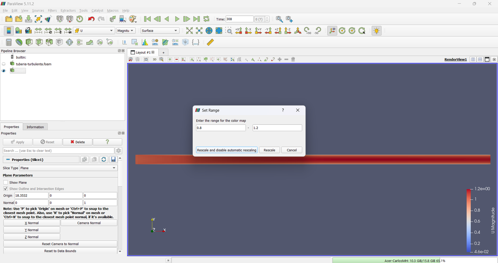
Figura 3.El rango del mapa de color.Rescale to Custom Data Range: de 0.8 a 1.2.
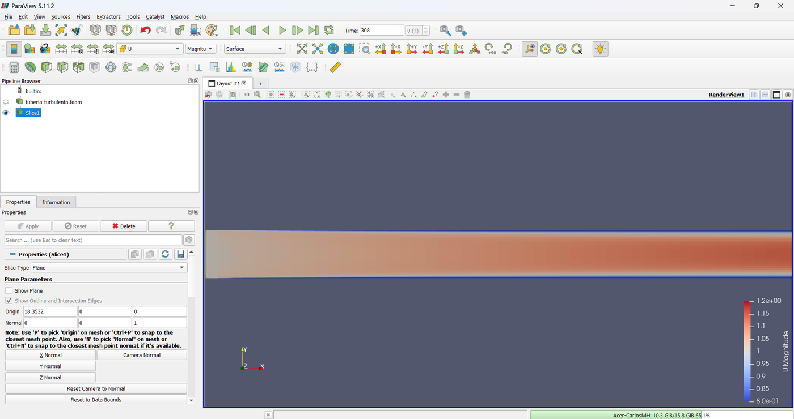
Figura 4.La entrada. Con el rango de 0.8 a 1.2 y la cámara de las primeras 12 D se ve cómo la capa lenta de la pared crece y el centro se acelera.
3. La presión
Color por p y la cámara del tubo entero (figura 5): del rojo de la entrada (0.41 m²/s²) al azul de la salida (0), casi linealmente.
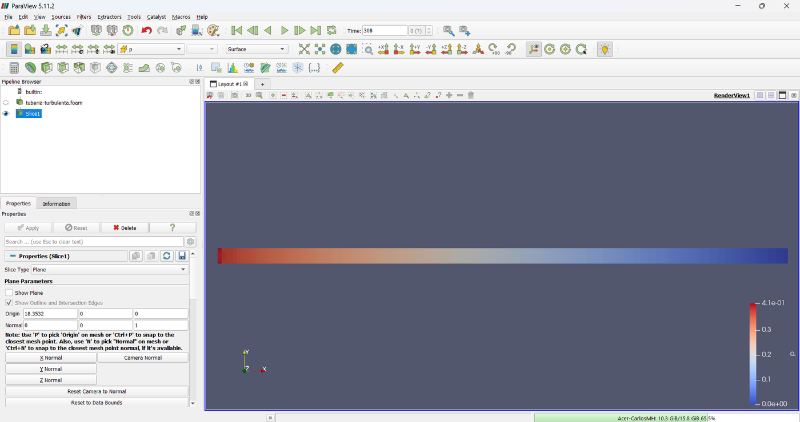
Figura 5.La presión. De 0.41 m²/s² en la entrada a 0 en la salida, casi linealmente.
4. La viscosidad turbulenta
Con Slice1, Calculator: nombre nutnu, función nut/0.00002 (la viscosidad molecular del caso; figura 6), Apply. Color por nutnu (figura 7) y por k (figura 8).
El filtro se borra con Delete al terminar la imagen: el Pipeline Browser sólo enseña nueve renglones, y los filtros que ya no hacen falta estorban. El que queda seleccionado después de borrar es el padre.
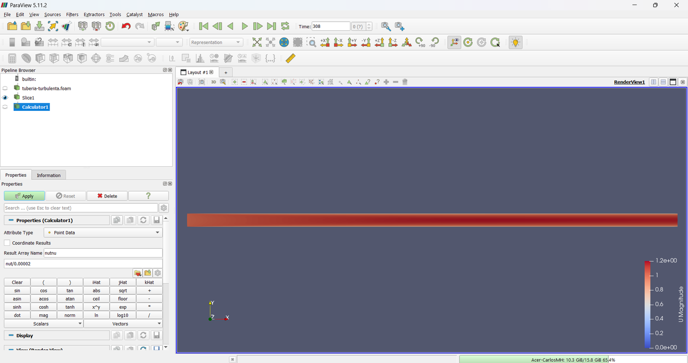
Figura 6.El Calculator de νt/ν. El nombre nutnu y la función nut/0.00002 (la viscosidad molecular del caso).
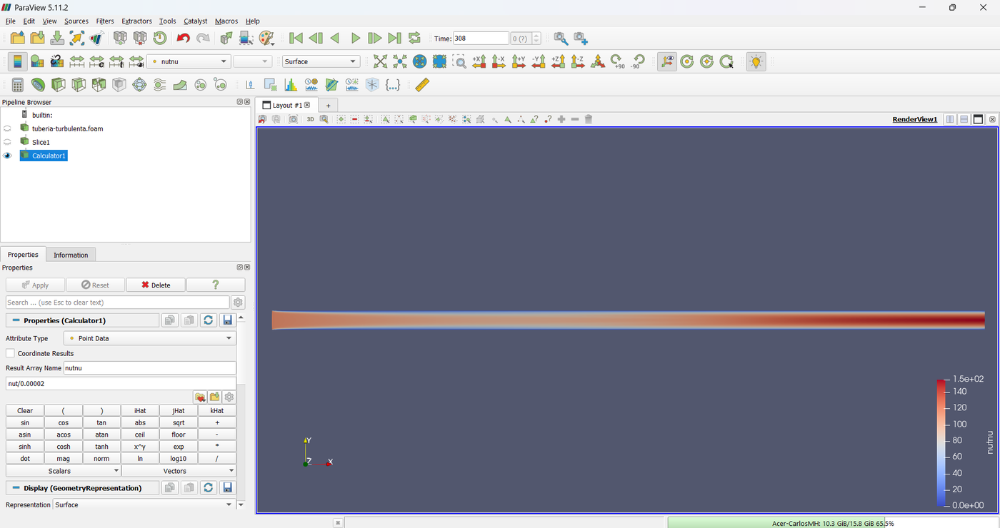
Figura 7.νt/ν. Cero en la pared y hasta 147 en el centro del tubo, una vez desarrollada la capa límite.
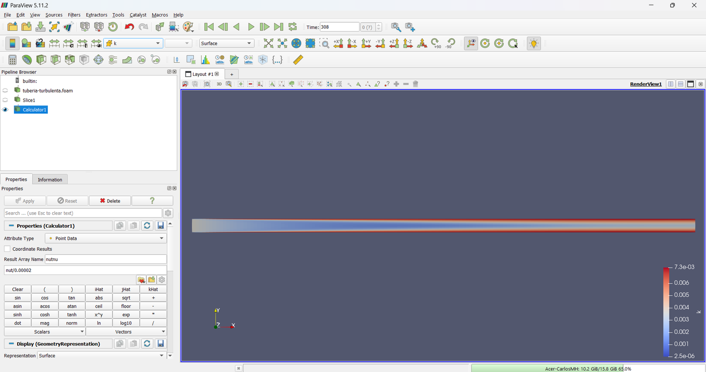
Figura 8.La energía cinética turbulenta. El máximo, cerca de la pared (a r/R ≈ 0.94).
5. Isobaras
Con Slice1 coloreado por p, Contour sobre p: se borra el valor que trae, Add a range of values de 0.02 a 0.4 con 20 muestras (figura 9), Apply, y el contorno en un solo color (figura 10). En la zona desarrollada son rectas verticales, a la misma distancia: la presión baja linealmente. Cerca de la entrada se curvan.
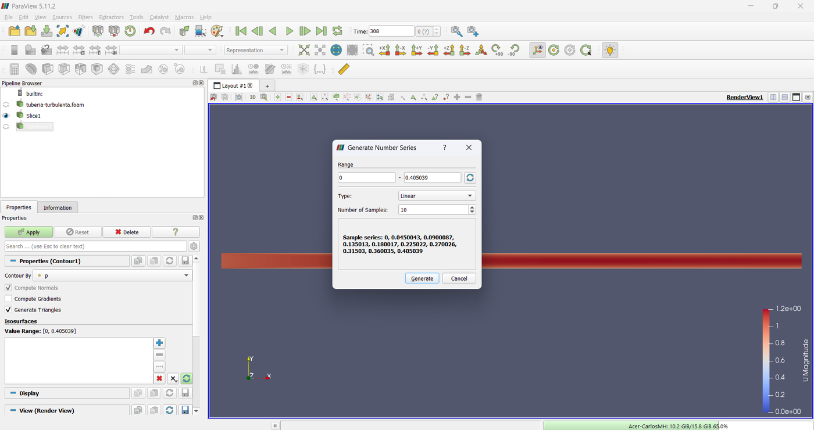
Figura 9.Los valores de las isobaras.Add a range of values: 20 valores entre 0.02 y 0.4.
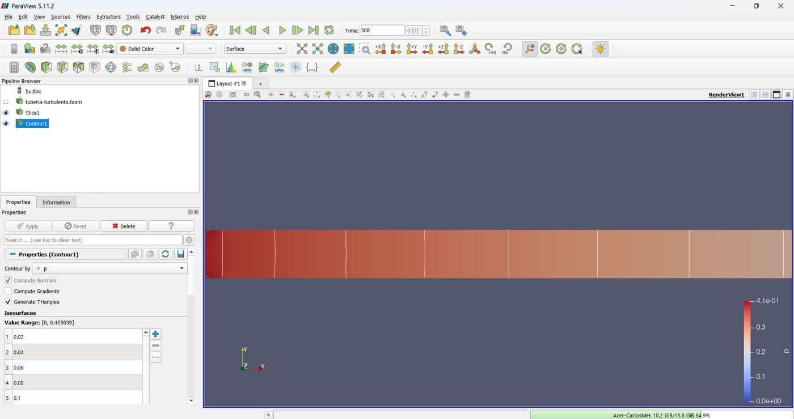
Figura 10.Las isobaras. Rectas verticales a igual distancia en el flujo desarrollado: la presión baja linealmente.
6. Vectores de velocidad
Con Slice1, Clip con una caja (Box) en posición (0, −0.5, −0.2) y longitud (6, 1, 0.4): se queda con las primeras 6 D (figura 11). Con Clip1, Glyph: sin matriz de escala, factor 0.2 y 300 puntos con muestreo de superficie; coloreado por U, sobre la silueta del corte (figura 12).
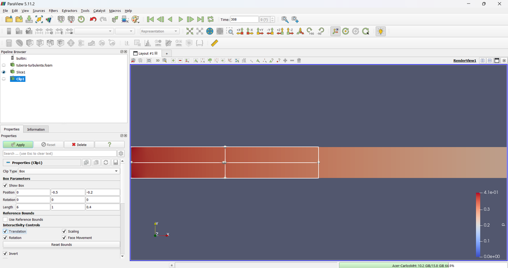
Figura 11.La caja del Clip. Posición (0, −0.5, −0.2) y longitud (6, 1, 0.4): las primeras 6 D del corte.
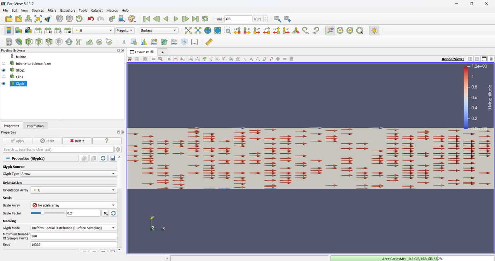
Figura 12.Los vectores de velocidad. Sin matriz de escala, factor 0.2 y 300 puntos: flechas paralelas al eje en todo el tramo.
7. Líneas de corriente
Con el lector, Stream Tracer: Seed TypeLine de (0.05, −0.45, 0) a (0.05, 0.45, 0), Resolution 10 (figura 13), Apply y color por U (figura 14).
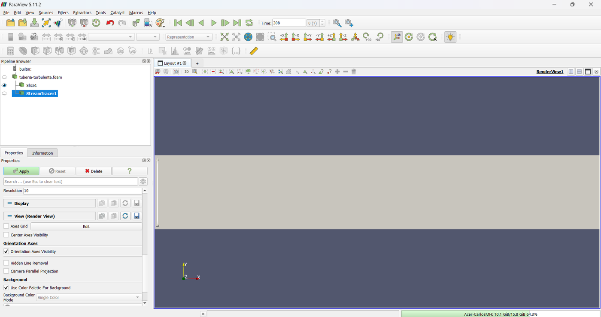
Figura 13.La línea de semillas. De (0.05, −0.45, 0) a (0.05, 0.45, 0), con 10 semillas, justo después de la entrada.
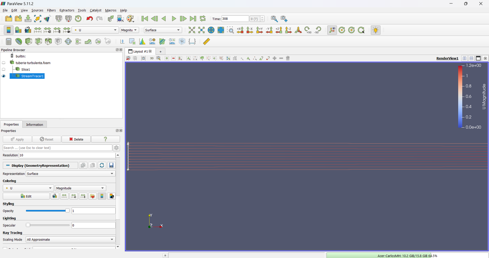
Figura 14.Las líneas de corriente. Rectas y paralelas al eje; el color (U) cambia a lo largo de cada línea por la aceleración del centro.
8. El corte transversal
Con el lector, Slice con X Normal y el origen en x = 31, Apply, color por U y la cámara desde la salida: posición (36, 0, 0), punto focal (31, 0, 0) (figura 15). El perfil es axisimétrico: el rojo del centro rodea al azul de la pared.
Figura 15.El corte transversal. Visto desde la salida: el perfil es axisimétrico, con la velocidad máxima en el centro.
9. La pared: \(y^+\) y el esfuerzo medio
File ▸ Open (Ctrl + O) y el mismo tuberia-turbulenta.foam: un segundo lector. En Mesh Regions, sin internalMesh y con patch/walls (figura 16), Apply. Color por yPlus (figura 17).
Integrate Variables (Ctrl + Espacio) con Divide Cell Data By Volume marcado, Apply. ParaView abre una hoja de cálculo; con Attribute en Cell Data (figuras 18 y 19, con la barra de desplazamiento) se leen el área de la pared (115.198 m², que es \(\pi D L\)) y el esfuerzo medio, wallShearStress en x = 0.002494 m²/s².
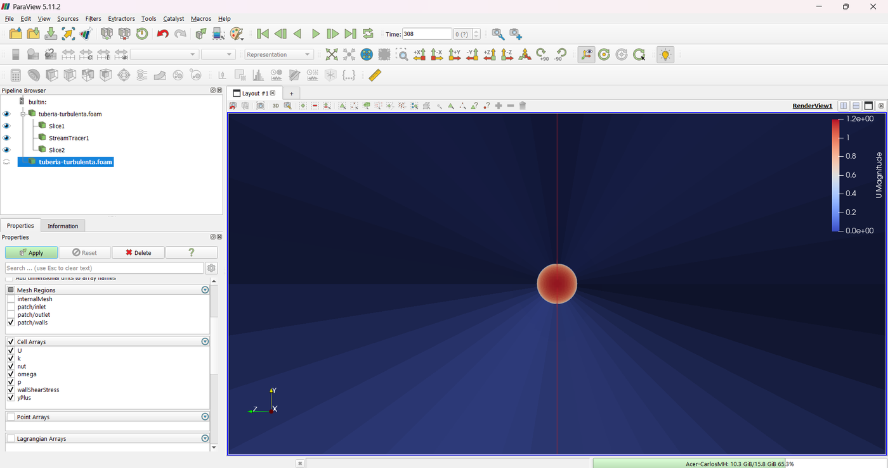
Figura 16.El segundo lector. En Mesh Regions: sin internalMesh y con patch/walls.
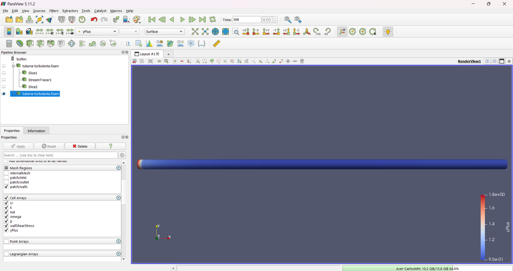
Figura 17.y⁺ sobre la pared. De 0.95 a 1.77; el máximo, en la entrada.
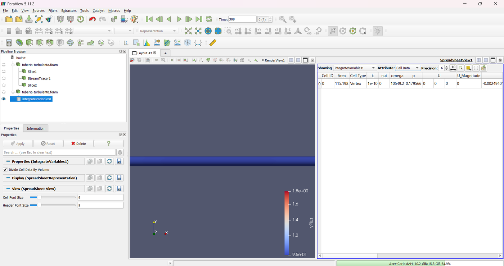
Figura 18.Integrate Variables. Con Attribute en Cell Data: Area y wallShearStress promedio.
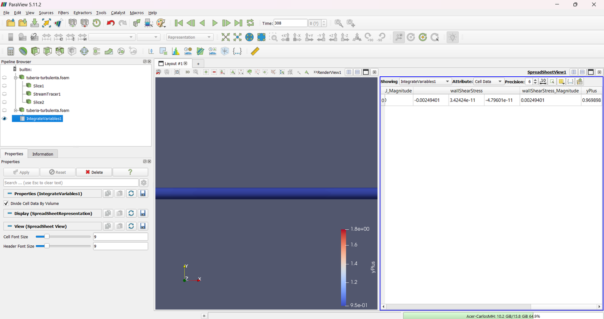
Figura 19.El esfuerzo en la pared. Las últimas columnas de la misma fila: wallShearStress (con el signo de la dirección del flujo: negativo en x) y su magnitud, 0.002494 m²/s².
10. Guardar una imagen
File ▸ Save Screenshot… (figura 20), figura.png en la carpeta del caso y OK.
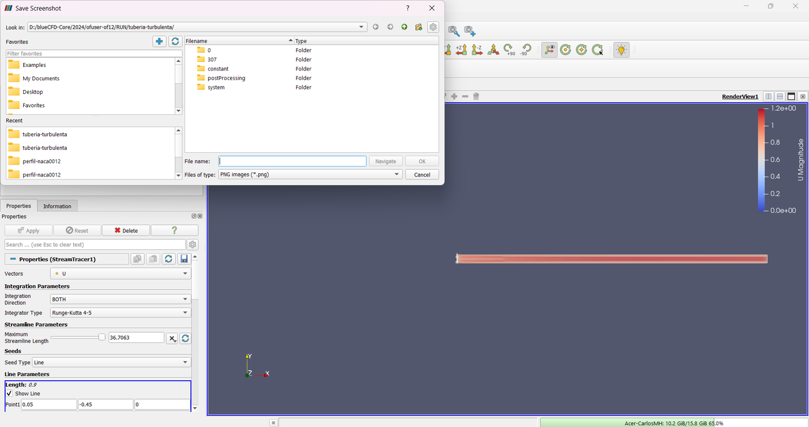
Figura 20.Guardar la imagen.File ▸ Save Screenshot….
11. La velocidad sobre el eje
Con el lector, Plot Over Line: Point1 = (0.05, 0, 0), Point2 = (36.6, 0, 0), Resolution = 800 (figura 21), Apply. En el panel de series (se escribe «series» en el buscador) se apagan todas con la casilla del encabezado y se deja sólo U_Magnitude (figura 22).
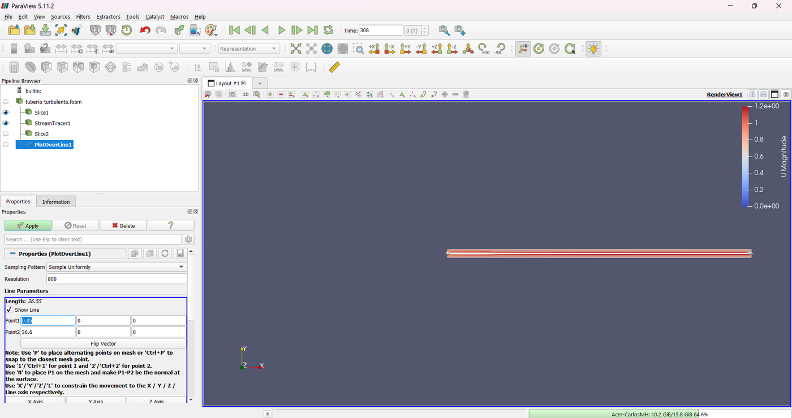
Figura 21.La recta sobre el eje. De (0.05, 0, 0) a (36.6, 0, 0), con 800 puntos.
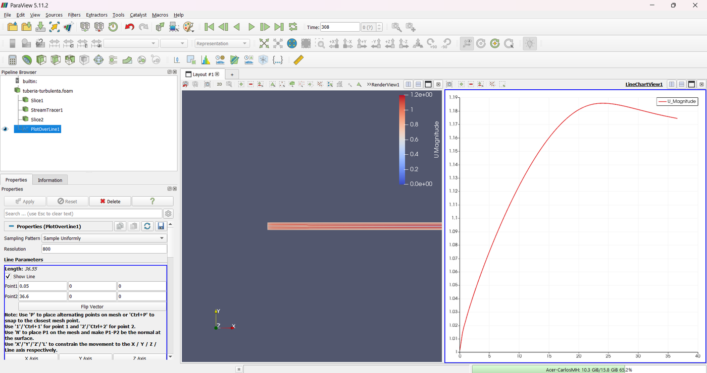
Figura 22.La velocidad en el eje. Sube de 1 a unos 1.18 m/s y llega al 99 % de su valor en x = 31 D hacia x = 16.6 D; después baja un poco.
12. El perfil radial en variables de pared
Se cambia la recta del mismo Plot Over Line: Point1 = (31, 0, 0), Point2 = (31, 0.4999, 0) (del eje a la pared), Apply (figura 23).
Dos Calculator encadenados, el segundo sobre el primero: yplus = (0.5-coordsY)*0.04893/0.00002 (la distancia a la pared por \(u_\tau/\nu\)) y uplus = mag(U)/0.04893 (figura 24); 0.04893 es \(u_\tau\) en m/s.
En la gráfica del último: el eje X es yplus (se quita Use Index For XAxis y se elige yplus en X Array Name), la serie, sólo uplus, y el eje de abajo en escala logarítmica (en las propiedades de la vista, Bottom Axis Log Scale; figura 25). La ley de la pared se compara con los números de la tabla 4.
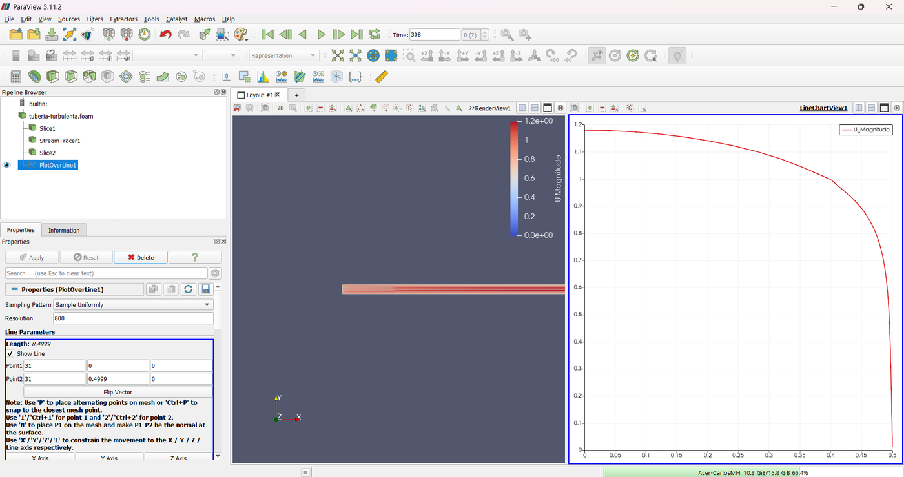
Figura 23.El perfil radial. Del eje (a la izquierda) a la pared: casi plano en el centro y con una caída brusca junto a la pared.
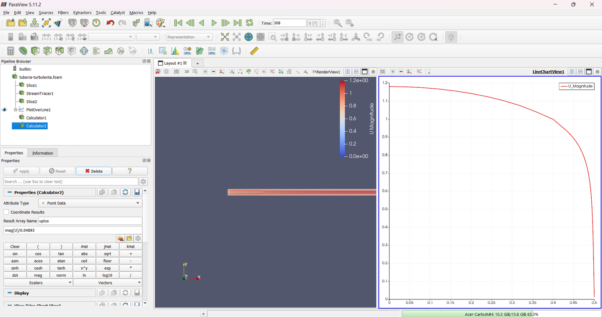
Figura 24.El Calculator de u⁺.uplus = mag(U)/0.04893, sobre el Calculator que calculó yplus.
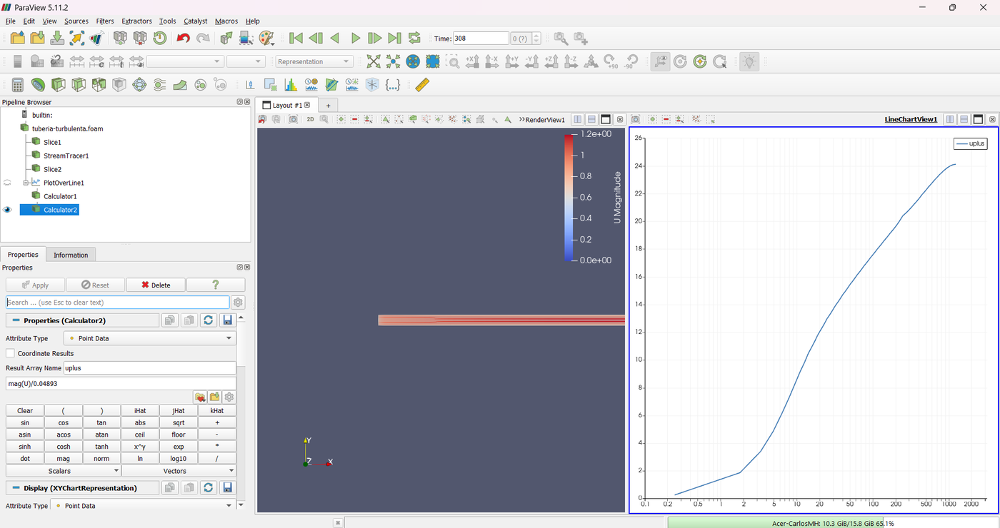
Figura 25.La ley de la pared.uplus contra yplus, con el eje de abajo en escala logarítmica: la zona logarítmica es casi una recta entre y⁺ = 30 y 300.
13. Guardar el estado
File ▸ Save State…, estado.pvsm en la carpeta del caso (figura 26). Con File ▸ Load State… se recupera el árbol de filtros.
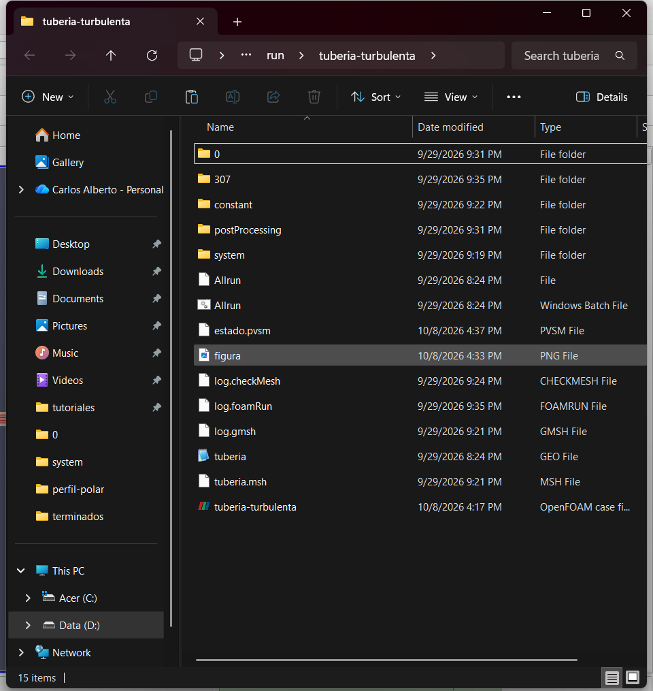
Figura 26.Lo que se guardó.figura.png y estado.pvsm, en la carpeta del caso, junto a 307.
El árbol de filtros
Los filtros, uno por uno
El árbol de filtros queda al final con el lector, Slice1, StreamTracer1, Slice2 y PlotOverLine1 con sus dos Calculator (figura 27). Los demás se borraron al terminar su imagen (Calculator de la viscosidad turbulenta, Contour, Clip y Glyph, y el segundo lector con Integrate Variables).
Figura 27.El árbol de filtros al terminar. Cada cuadro es un filtro del Pipeline Browser y cada línea, la entrada que recibe. Los demás se borraron al terminar su imagen. En ParaView, los renglones de una cadena sin ramas se dibujan sin sangrar.
Dos cosas de ParaView ayudan a leer el árbol. El sangrado: un filtro con un solo hijo lo dibuja justo debajo, a la misma altura; el sangrado y el signo ⊟ sólo aparecen cuando de un mismo filtro cuelgan varios. El ojito: un filtro se ve en la vista sólo si su ojo está abierto; al crear un filtro, ParaView suele cerrar el de su entrada, pero no siempre (Glyph deja abierta su entrada), y en un tutorial que apila cinco imágenes hay que ir abriendo y cerrando ojos para que cada imagen enseñe sólo lo suyo. En la gráfica de la línea, el ojo es el de la vista de la gráfica, no el de la vista 3D: cada vista tiene sus propios ojitos.
Resultados
Lo que muestran las imágenes
Con las imágenes de la receta se lee el flujo del 1.2 casi entero.
El desarrollo (figuras 4 y 22). La capa límite crece desde la pared y la velocidad del eje sube de 1 a 1.18 m/s en x = 31 D. Llega al 99 % de ese valor hacia x = 16.6 D. En la gráfica del eje, la velocidad llega a un máximo hacia las 24 D y baja un poco hasta la salida: el perfil no está del todo desarrollado, como ya advertía el tutorial 1.2.
La presión (figura 5 y 10). Cae de 0.41 a 0 m²/s²; en la zona desarrollada, a razón de 0.00959 m²/s² por diámetro. Las isobaras son rectas verticales equiespaciadas.
La viscosidad turbulenta (figuras 7 y 8). \(\nu_t/\nu\) llega a 147 lejos de la pared y se anula en ella; \(k\) tiene su máximo cerca de la pared, a r/R ≈ 0.94.
Los vectores y las líneas de corriente (figuras 12 y 14). Paralelos al eje en todo el tubo; las líneas sólo se separan un poco del centro hacia la pared en la entrada, donde el fluido del centro se acelera.
La pared (figuras 17, 18 y 19). \(y^+\) de 0.95 a 1.77, con promedio 0.97: la primera celda quedó donde se pidió. El esfuerzo medio da \(f\) = 0.0200.
El perfil en variables de pared (figura 25). Sigue \(u^+ = y^+\) cerca de la pared (en \(y^+\) = 5, \(u^+\) = 4.99), se acerca a la ley logarítmica entre 30 y 100, y se separa de ella hacia el eje.
Ejemplo resuelto
Tres comprobaciones de las imágenes
Enunciado. Comprobar que lo que se ve es físico: (1) el factor de fricción que sale del esfuerzo medio en la pared contra el del gradiente de presión del tutorial 1.2; (2) el perfil radial en x = 31 D contra la ley de la pared; (3) \(y^+\) contra el valor pedido al mallar. Condiciones: el caso del tutorial 1.2, sin cambios, en el tiempo 308 de ParaView.
Comprobación
ParaView
Referencia
Diferencia
Factor de fricción \(f = 8\bar\tau_w/U^2\), media de toda la pared
0.01995
0.01915 (del gradiente de presión, 1.2)
4.2 %
\(f\) local, de las caras entre 28 y 34 D
0.01935
0.01915 (1.2)
1.0 %
\(u^+\) en \(y^+\) = 30 (x = 31 D)
13.68
13.50 (ley logarítmica)
1.4 %
\(u^+\) en \(y^+\) = 100
17.61
16.43 (ley logarítmica)
7.2 %
\(y^+\) de la primera celda (promedio de la pared)
0.97
1 (el pedido al mallar)
3.0 %
Tabla 4.Tres comprobaciones de lo que se ve. Los valores de ParaView salen de las operaciones de la receta, hechas con pvpython; los de referencia, del tutorial 1.2 y de la ley de la pared con \(\kappa\) = 0.41 y \(B\) = 5.2. En x = 31 D el perfil todavía no está desarrollado del todo (el 1.2 lo dice).
1. El factor de fricción, por dos caminos
La ecuación (1) da \(f\) de dos maneras. Del esfuerzo medio en toda la pared (Integrate Variables) sale \(f\) = 0.01995; del gradiente de presión (tutorial 1.2), 0.01915. Están 4.2 % separados. La diferencia no es un error: el promedio incluye la entrada, donde la fricción es alta (tabla 5: \(f\) = 0.029 en las primeras 2 D, contra 0.019 en el tramo de 28 a 34 D). Con las caras del tramo desarrollado, \(f\) = 0.01935, a 1.0 % del valor del 1.2. La fricción baja a menos de 5 % sobre el valor desarrollado hacia x = 5 D.
x (D)
0 a 2
2 a 6
6 a 12
12 a 20
28 a 34
\(f\) local
0.0288
0.0208
0.0195
0.0191
0.0194
Tabla 5.El factor de fricción local a lo largo del tubo. Con las caras de la pared, entre las posiciones x dadas (\(f = 8\tau_w/U^2\), \(\tau_w\) cinemático): la fricción sube mucho en la entrada, donde la capa límite es delgada, y baja hasta el valor del flujo desarrollado.
2. La ley de la pared
La figura 25 pone \(u^+\) contra \(y^+\) en x = 31 D, con \(u_\tau\) = 0.04893 m/s. En \(y^+\) = 30 el perfil da \(u^+\) = 13.68, contra 13.50 de la ley logarítmica (1.4 %); en \(y^+\) = 100, 17.61 contra 16.43 (7.2 %). La coincidencia es buena donde la ley es válida, y se pierde hacia el eje, donde empieza la estela del perfil y la ley deja de ser una buena descripción. La pendiente del tramo de 30 a 300 en \(y^+\), ajustada con los datos, es \(1/\kappa\) = 3.06 (la ley usa 2.44): como el perfil no está del todo desarrollado, el tramo es algo más empinado.
3. y⁺
El promedio de \(y^+\) sobre la pared es 0.97, a 3 % del 1 pedido; el máximo, 1.77, está en la entrada, donde la fricción es mayor. La malla cumple lo que dijo el 1.2.
Las imágenes son físicas. El esfuerzo en la pared da el mismo factor de fricción que el gradiente de presión una vez que se descuenta la entrada; el perfil sigue la ley de la pared donde ésta es válida, y la primera celda quedó en \(y^+\) ≈ 1. Una imagen sin esas comprobaciones es sólo una imagen.
Preguntas que orientan la lectura
En la tabla 5, \(f\) baja de 0.029 a 0.019 y vuelve a subir un poco en el último tramo (0.019). ¿Qué pasa cerca de la salida que lo explique? (Pista: la velocidad del eje baja en las últimas diámetros.)
Si el tubo fuera el doble de largo, ¿cambiaría el \(f\) de Integrate Variables? ¿Hacia dónde, y cuánto?
La ley logarítmica no es válida por debajo de \(y^+\) = 30. ¿Cuántas celdas del caso hay en esa zona, con la primera en \(y^+\) ≈ 1 y el crecimiento de 1.2?
Errores frecuentes
Qué sale mal en ParaView
El tubo es una tira de 40 píxeles
Con 36 diámetros de largo, el Reset Camera deja el tubo muy delgado (figura 1). Se escribe la cámara con Adjust Camera para ver un tramo, y no se estira la geometría (con Transform el radio se vería mayor, pero los vectores y las gráficas dejarían de corresponder al tubo).
El rango de color por omisión no deja ver el desarrollo
El rango de 0 a 1.2 de la velocidad lo fija el cero de la pared; el 95 % del corte es casi del mismo color. Con Edit Color Map y Rescale to Custom Data Range (0.8 a 1.2) se ve el perfil (tabla 3).
Un filtro no muestra nada, o hay imágenes encimadas
Casi siempre es el ojito: el filtro nuevo se ve, pero algunos filtros (el Glyph) dejan abierta su entrada y quedan encimados. El cuadro del renglón se comprueba en el Pipeline Browser y, si algo estorba, se cierra su ojo. Otra causa: no se hizo clic en Apply (el botón sigue verde).
Integrate Variables da una cifra enorme
Sin Divide Cell Data By Volume, los campos de celda salen integrados: el esfuerzo cortante da \(\tau_w A\) = 0.287 en lugar de \(\tau_w\) = 0.00249. La hoja de cálculo muestra por omisión los datos de punto: hay que pasar a Cell Data para ver el área y el esfuerzo.
El perfil radial sale al revés, o con ceros
La recta del Plot Over Line del perfil radial va del eje (y = 0) a la pared (y = 0.4999). Si se invierten los extremos, \(y^+\) baja de izquierda a derecha en la gráfica. Si la recta llega a y = 0.5 o más allá, el último punto cae fuera del dominio y ParaView lo marca como no válido (vtkValidPointMask en cero): salen ceros que en eje logarítmico aparecen como un salto.
El eje logarítmico no muestra el primer punto
En el eje de la pared, \(y^+\) = 0 no existe en una escala logarítmica. La recta termina en y = 0.4999, a \(y^+\) = 0.24 de la pared, para que el logaritmo exista. Por eso la gráfica empieza donde la ley logarítmica ya no es válida.
Práctica sugerida
La tubería laminar, leída igual
Enunciado. Repetir el corte longitudinal, la gráfica del eje y Integrate Variables con la tubería laminar del tutorial 1.1 (Re = 500) y comparar: el factor de fricción con \(64/Re\), y la velocidad en el eje con \(2U\). Condiciones: los mismos filtros; la tubería laminar tiene otra longitud (la que calculó el 1.1) y no necesita \(y^+\) ni ley de la pared. Se puede abrir con paraFoam en la carpeta tuberia-laminar y cargar el estado estado.pvsm de este tutorial, cambiando sólo el archivo del lector.
El procedimiento, en corto
En la terminal, cd $FOAM_RUN/tuberia-laminar y paraFoam; Apply y Last Frame.
Slice por el eje, la cámara del tubo y el color de U: el perfil parabólico se desarrolla más despacio que el turbulento: la longitud de entrada laminar, \(0.06\,Re\,D\), crece con \(Re\).
Plot Over Line sobre el eje y Integrate Variables sobre la pared; llene la tabla.
Registro de resultados
Caso
\(f\) de Integrate Variables
\(f\) de la teoría
\(u_\mathrm{eje}/U\) en x = 31 D
Longitud de entrada (D)
Turbulenta (Re = 50 000)
0.01995
0.01915 (Petukhov: 0.02096)
1.180
16.6
Laminar (Re = 500)
Tabla 6.Registro de resultados. La primera fila es de la tubería turbulenta de este tutorial; la segunda es para llenarla con la laminar del tutorial 1.1.
Preguntas que orientan la lectura
¿La velocidad del eje del tubo laminar llega a \(2U\)? ¿A qué distancia de la entrada?
El factor de fricción medio de Integrate Variables, ¿queda por encima o por debajo de \(64/Re\)? ¿Por qué el efecto de la entrada es menor que en el turbulento?
¿Qué filtros del turbulento ya no tienen sentido en el laminar?
Fuentes
Referencias
Kitware (2022). The ParaView Guide (versión 5.11). Kitware, Inc. www.paraview.org
Pope, S. B. (2000). Turbulent flows. Cambridge University Press. Capítulo 7: flujo cerca de la pared; ley de la pared.
Schlichting, H. y Gersten, K. (2017). Boundary-layer theory (9.ª ed.). Springer.
Petukhov, B. S. (1970). Heat transfer and friction in turbulent pipe flow with variable physical properties. Advances in Heat Transfer, 6, 503-564.
Todas las cifras salen del caso del tutorial 1.2 (OpenFOAM 12, blueCFD-Core 2024, laptop con Windows 11), leídas con ParaView 5.11.2 (pvpython) con las mismas operaciones de la receta. Las capturas son de ParaView 5.11.2 y de la terminal de blueCFD-Core.
Lernziele
Was Sie danach können sollten
Vollständige deutsche Übersetzung in Vorbereitung. Jeder Abschnitt enthält eine Zusammenfassung; der vollständige Text mit Abbildungen und Tabellen liegt in der spanischen Fassung vor, die über die Schaltfläche ES oben erreichbar ist.
Die Lösung aus Tutorial 1.2 in ParaView öffnen und Filter für Filter lesen: Längsschnitt, sich entwickelndes Geschwindigkeitsprofil, Druck, turbulente Viskosität, Isobaren, Vektoren und Stromlinien, y⁺ und mittlere Wandschubspannung mit Integrate Variables, Achs- und Radialprofil mit Plot Over Line und das Profil in Wandeinheiten auf logarithmischer Achse.
Das Problem
Was nachbearbeitet wird
Die Lösung ist das Rohr aus Tutorial 1.2 (Re = 50 000, k-ω SST, 149 940 Zellen, 36,6 Durchmesser lang, in 307 Iterationen konvergiert). Nichts wird neu gerechnet.
Die Theorie
Was jedes Bild aussagt
Entwicklung der Rohrströmung, Wandeinheiten y⁺ = y uτ/ν und u⁺ = u/uτ, das Wandgesetz, die mittlere Wandschubspannung und die Rohrreibungszahl f = 8 τw/(ρU²), das Verhältnis der turbulenten Viskosität νt/ν und Stromlinien im Rohr.
Schritt für Schritt
Vom Schnitt zum Wandgesetz
paraFoam; Slice; von Hand geschriebene Kamera; Farbbereiche; Calculator für νt/ν; Contour (Isobaren); Clip und Glyph; Stream Tracer; ein Querschnitt; ein zweiter Reader nur mit der Wand; Integrate Variables; Save Screenshot; Plot Over Line auf der Achse und über den Radius mit zwei Calculators; logarithmische Achse; Save State.
Die Filterkette
Die Filter, einzeln
Die Filterkette: Reader → Slice1 (mit Calculator, Contour, Clip und Glyph, jeweils nach dem Bild wieder entfernt), StreamTracer1, Slice2 und PlotOverLine1 mit zwei Calculators; und ein zweiter Reader auf dem Patch walls mit Integrate Variables.
Ergebnisse
Was die Bilder zeigen
Das Profil entwickelt sich auf der Achse über etwa 17 Durchmesser; der Druck fällt fast linear; νt erreicht 147 ν; y⁺ bleibt zwischen 0,95 und 1,77; die mittlere Wandschubspannung ergibt f = 0,0200.
Durchgerechnetes Beispiel
Drei Prüfungen der Bilder
Drei Prüfungen: das mittlere f aus Integrate Variables gegen das f aus dem Druckabfall von Tutorial 1.2 (der Einlauf erklärt die Differenz); das Profil bei x = 31 D gegen das Wandgesetz; und y⁺ gegen den geforderten Wert.
Häufige Fehler
Was in ParaView schiefgeht
Das Rohr ist ein dünner Streifen (36:1); der Pipeline Browser zeigt nur neun Zeilen; ein Filter zeigt nichts (verdeckt oder nicht angewendet); Integrate Variables ohne Division durch die Fläche; die Profillinie beginnt an der Achse, nicht an der Wand; die Log-Achse mit y⁺ = 0.
Übungsvorschlag
Das laminare Rohr, genauso gelesen
Den laminaren Fall aus Tutorial 1.1 öffnen und Schnitt, Achsprofil und Integrate Variables wiederholen; f mit 64/Re und die Mittengeschwindigkeit mit 2U vergleichen.
Quellen
Literatur
ParaView Guide; Pope (2000); Schlichting und Gersten; Petukhov (1970); Tutorials 1.1 und 1.2 dieser Reihe.